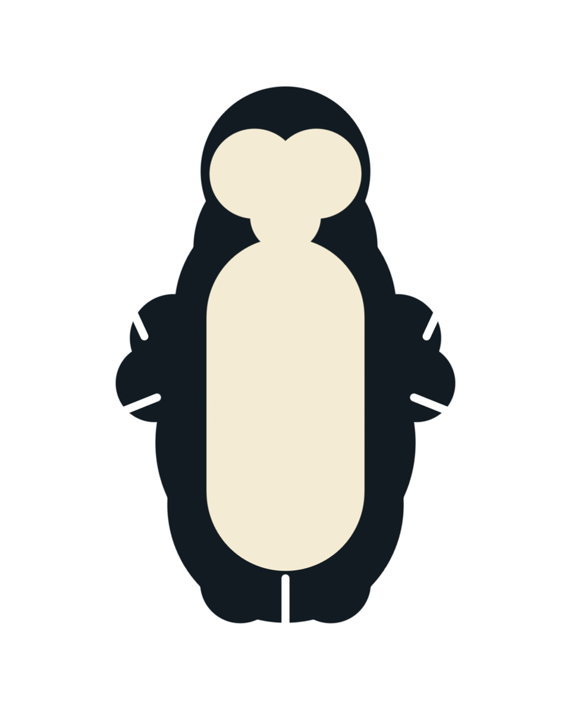
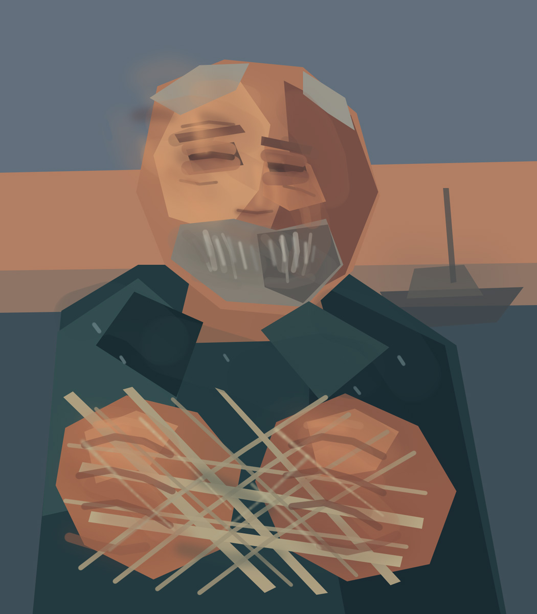
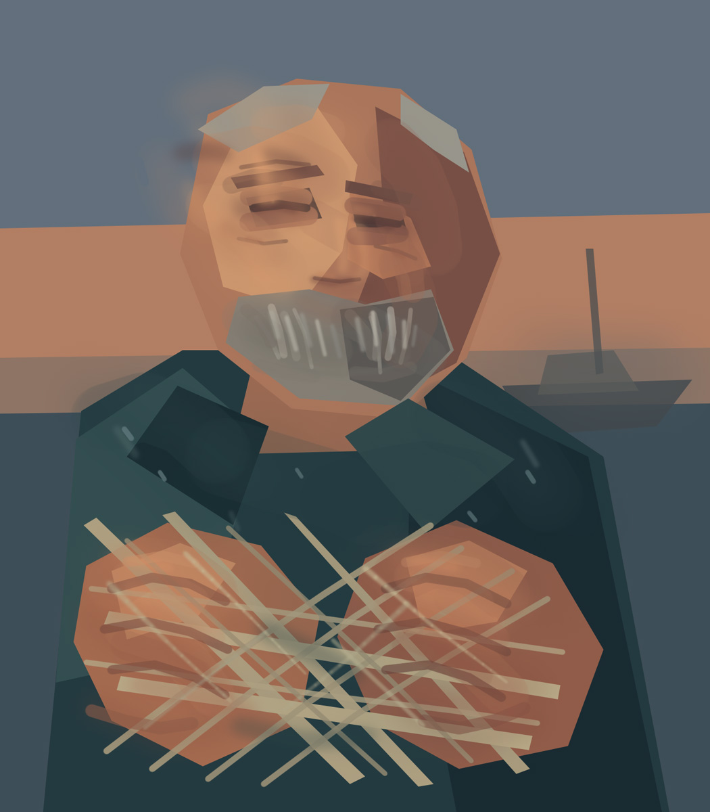

Judge only the visible before/after evidence against the brief, pass goal, and preservation constraints. Do not inspect project source material or critic answers while adjudicating.
case-001
BeforeAfter
Brief: A quiet rainy European street corner at night with a warm lamp and bench, cool dark masses, mist, wet reflections, and restrained detail.
Pass goal: Establish or strengthen the large value grouping and atmospheric readability without prematurely detailing peripheral architecture.
Preservation constraints:
Keep the warm lamp/bench focus distinct from the cool environment.
Preserve atmospheric depth and a calm peripheral detail level.
case-002
BeforeAfter
Brief: A wind-up toy robot rendered in a limited cream, navy, and rust-red flat screenprint language.
Pass goal: Add connective joint forms while preserving already-established recognition cues and the flat screenprint hierarchy.
Do not turn the flat screenprint treatment into volumetric photoreal rendering.
case-003
BeforeAfter
Brief: A coherent coastal tower scene with readable architecture, sea, atmosphere, and controlled painterly surface variation.
Pass goal: Refine architectural form and surface treatment without weakening silhouette, plane clarity, or scene integration.
Preservation constraints:
Preserve the tower's main silhouette and structural readability.
Avoid local surface treatment that makes the whole image less coherent.
case-004
BeforeAfter
Brief: A painterly portrait study emphasizing the characteristic head turn, dark background, face-light relationship, and pearl focal accent.
Pass goal: Improve composition and large portrait placement before detailed feature rendering.
Preservation constraints:
Preserve the dominant head/shoulder relationship and dark-background separation.
Do not treat increased local detail as proof of better likeness or composition.
case-005
BeforeAfter
Brief: A painterly portrait study emphasizing the characteristic head turn, dark background, face-light relationship, and pearl focal accent.
Pass goal: Correct large composition/placement while retaining the established value hierarchy.
Preservation constraints:
Preserve the main face-light grouping and dark surrounding field.
Do not claim success from geometric movement alone if the portrait reads worse.
case-006
Before

After
Brief: A retro-futurist penguin with a clear graphic silhouette, readable costume/technology motifs, and controlled stylized shape language.
Pass goal: Refine a bounded visual relationship without sacrificing the graphic silhouette or focal hierarchy.
Preservation constraints:
Preserve subject recognizability and the dominant graphic silhouette.
Avoid technically tidy changes that flatten the intended stylization.
case-007
BeforeAfter
Brief: A fantasy night scene with a dark wooden house, warm windows, water reflections, distant shore, moonlight, and soft atmospheric unification.
Pass goal: Unify the whole scene atmospherically by deepening the distant shore, adding horizon haze, and softly gathering peripheral edges without changing composition.
Preservation constraints:
Keep the house predominantly a dark silhouette with restrained warm-window emphasis.
Preserve the established composition while adjusting atmosphere.
case-008
BeforeAfter
Brief: A clean anime-style car illustration with controlled graphic forms and line hierarchy.
Pass goal: Assess whether any visible change occurred and avoid inventing improvement or regression when evidence is identical.
Preservation constraints:
Do not infer a change from operation intent or metadata.
Treat identical visual evidence symmetrically.
case-009
BeforeAfter
Brief: An intentionally surreal night scene in which moon, water, reflected light, and spatial relationships may defy ordinary gravity or physical geometry; those impossible relationships are deliberate.
Pass goal: Assess preservation of the declared surreal spatial intent without correcting intentional impossibility back toward realism.
Preservation constraints:
Do not flag anti-gravity or impossible spatial relations merely for violating ordinary-world physics when they match the brief.
Do not invent visual changes when before and after evidence is identical.
case-010

Before

After
Brief: A painterly elderly fisherman study balancing face character, weathered clothing, net material, depth, and a clear focal hierarchy.
Pass goal: Improve material/depth relationships without allowing texture or secondary detail to compete with the face.
Preservation constraints:
Preserve the face as the principal focal anchor.
Texture/material detail must remain subordinate to large form and depth.